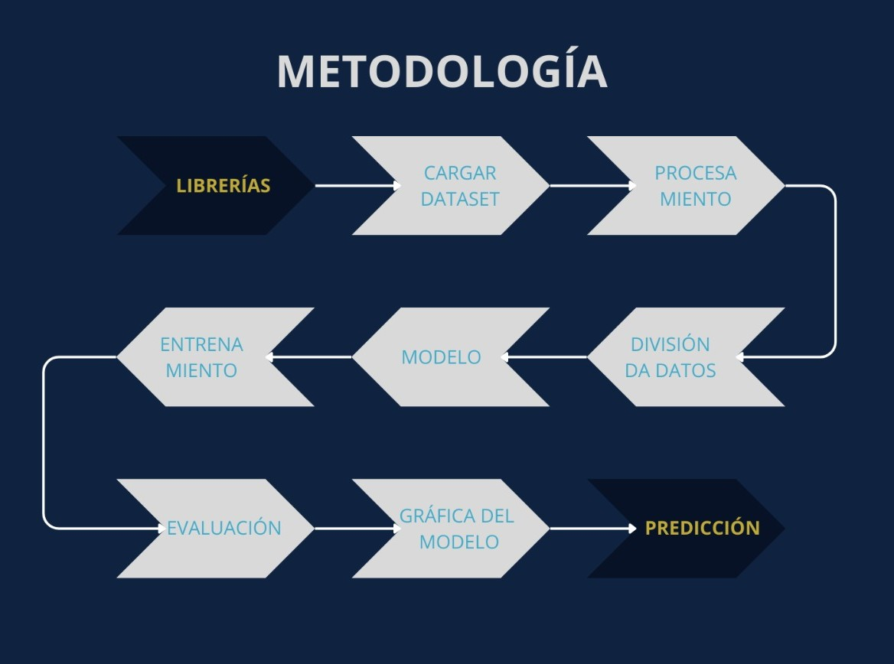

Modelado predictivo
Machine Learning
Uso de Machine Learning para la predicción de profundidad y producción de los arrendamientos, mediante redes neuronales y regresión avanzada sobre datos del KGS.
01 · Planteamiento
Planteamiento del problema
El análisis de datos geoespaciales mediante Machine Learning permite procesar grandes volúmenes de registros históricos para predecir variables operativas críticas en los arrendamientos de Kansas.
02 · Objetivo
Objetivo del modelado
Desarrollar modelos de Machine Learning basados en redes neuronales que permitan clasificar y predecir parámetros operativos a partir de datos del Kansas Geological Survey, apoyando la toma de decisiones informadas en proyectos de recursos energéticos.
03 · Metodología
Metodología de aprendizaje
Flujo de trabajo de preparación de datos, entrenamiento y evaluación de los modelos.

04 · Despliegue
Explora en Google Colab
Accede a los cuadernos interactivos con la implementación completa de los modelos.
05 · Conclusión
Conclusión
Se ha logrado implementar modelos de Machine Learning capaces de analizar y predecir variables clave de los arrendamientos en Kansas, demostrando el valor de las técnicas predictivas aplicadas a datos geoespaciales del sector energético.